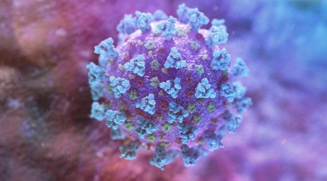

Hastalıktan En Çok Etkilenen Kişiler
- 60 yaş üstü olanlar - Ciddi kronik tıbbi rahatsızlıkları olan insanlar: - Kalp hastalığı - Hipertansiyon - Diyabet - Kronik Solunum yolu hastalığı - Kanser gibi - Sağlık Çalışanları
Covid-19 Nedir?
Yeni Koronavirüs Hastalığı (COVID-19), ilk olarak Çin’in Vuhan Eyaleti’nde Aralık ayının sonlarında solunum yolu belirtileri (ateş, öksürük, nefes darlığı) gelişen bir grup hastada yapılan araştırmalar sonucunda 13 Ocak 2020’de tanımlanan bir virüstür. Salgın başlangıçta bu bölgedeki deniz ürünleri ve hayvan pazarında bulunanlarda tespit edilmiştir. Daha sonra insandan insana bulaşarak Vuhan başta olmak üzere Hubei eyaletindeki diğer şehirlere ve Çin Halk Cumhuriyeti’nin diğer eyaletlerine ve diğer dünya ülkelerine yayılmıştır. Koronavirüsler, hayvanlarda veya insanlarda hastalığa neden olabilecek büyük bir virüs ailesidir. İnsanlarda, birkaç koronavirüsün soğuk algınlığından Orta Doğu Solunum Sendromu (MERS) ve Şiddetli Akut Solunum Sendromu (SARS) gibi daha şiddetli hastalıklara kadar solunum yolu enfeksiyonlarına neden olduğu bilinmektedir. Yeni Koronavirüs Hastalığına SAR-CoV-2 virüsü neden olur. Belirtileri Nelerdir? Belirtisiz olgular olabileceği bildirilmekle birlikte, bunların oranı bilinmemektedir. En çok karşılaşılan belirtiler ateş, öksürük ve nefes darlığıdır. Şiddetli olgularda zatürre, ağır solunum yetmezliği, böbrek yetmezliği ve ölüm gelişebilmektedir.
Korunma Yolları Nelerdir?
Mümkün olduğu kadar yurtdışına yolculuk yapılmaması önerilmektedir. Yurtdışına çıkışın zorunlu olduğu durumlarda aşağıdaki kurallara dikkat edilmelidir: Akut solunum yolu enfeksiyonlarının genel bulaşma riskini azaltmak için önerilen temel ilkeler Yeni Koronavirüs Hastalığı (COVID-19) için de geçerlidir. Bunlar; -El temizliğine dikkat edilmelidir. Eller en az 20 saniye boyunca sabun ve suyla yıkanmalı, sabun ve suyun olmadığı durumlarda alkol bazlı el antiseptiği kullanılmalıdır. Antiseptik veya antibakteriyel içeren sabun kullanmaya gerek yoktur, normal sabun yeterlidir. - Eller yıkanmadan ağız, burun ve gözlerle temas edilmemelidir. - Hasta insanlarla temastan kaçınmalıdır (mümkün ise en az 1 m uzakta bulunulmalı). - Özellikle hasta insanlarla veya çevreleriyle doğrudan temas ettikten sonra eller sık sık temizlenmelidir - Hastaların yoğun olarak bulunması nedeniyle mümkün ise sağlık merkezlerine gidilmemeli, sağlık kuruluşuna gidilmesi gereken durumlarda diğer hastalarla temas en aza indirilmelidir. - Öksürme veya hapşırma sırasında burun ve ağız tek kullanımlık kağıt mendil ile örtülmeli, kağıt mendilin bulunmadığı durumlarda ise dirsek içi kullanılmalı, mümkünse kalabalık yerlere girilmemeli, eğer girmek zorunda kalınıyorsa ağız ve burun kapatılmalı, tıbbi maske kullanılmalıdır. - Çiğ veya az pişmiş hayvan ürünleri yemekten kaçınılmalıdır. İyi pişmiş yiyecekler tercih edilmelidir. - Çiftlikler, canlı hayvan pazarları ve hayvanların kesilebileceği alanlar gibi genel enfeksiyonlar açısından yüksek riskli alanlardan kaçınılmalıdır. - Seyahat sonrası 14 gün içinde herhangi bir solunum yolu semptomu olursa maske takılarak en yakın sağlık kuruluşuna başvurulmalı, doktora seyahat öyküsü hakkında bilgi verilmelidir.